오늘은 제가 안산대 가성비 맛집 마루 부리또에서 먹었던 걸
포스팅하려고 왔어요 ! 리뷰 고고 ~~ !
몇 년째 이집 부리또만 먹는데 나만의 부리또 맛집 마루부리또를 소개 드릴까 합니다.
나만의 안산 맛집이기도 해요 !
운영시간은 매일 오전 10시 부터 오후 10시까지 입니다.
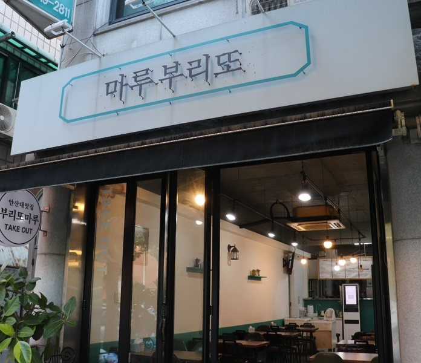
저는 한글이 주는 멋을 굉장히 좋아하는데요, 여기서도 그런 멋이 보여서 좋더라구요 !
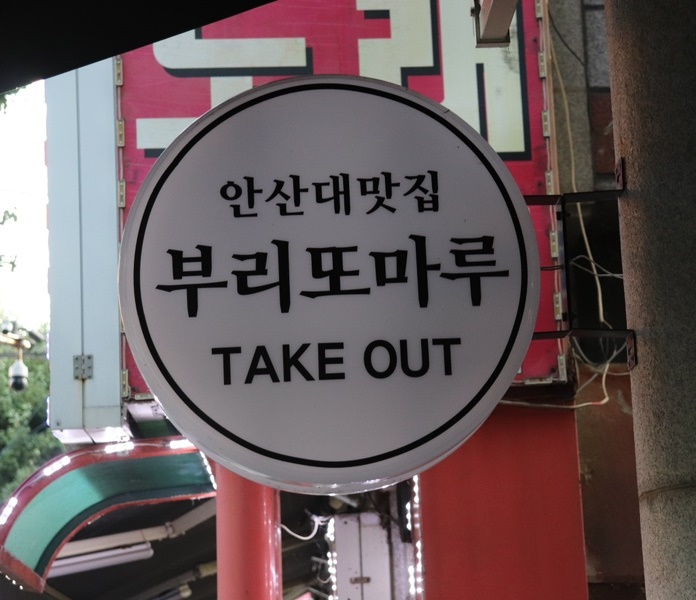
테이크 아웃 전문으로 하시는지
테이크 아웃을 굉장히 크게 적어두셨더라구요!
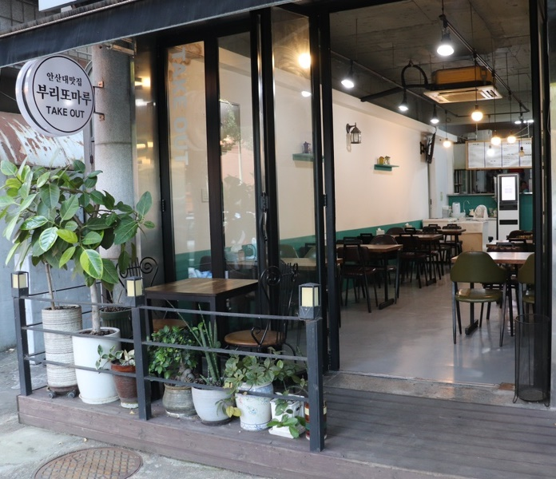
매장 앞에 줄서있는 사장님이 키우시는 것 같은
작고 귀여운 식물들 이에요 ㅎㅎ
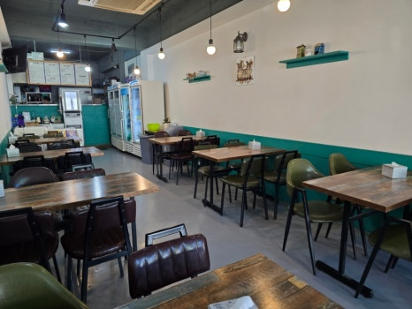
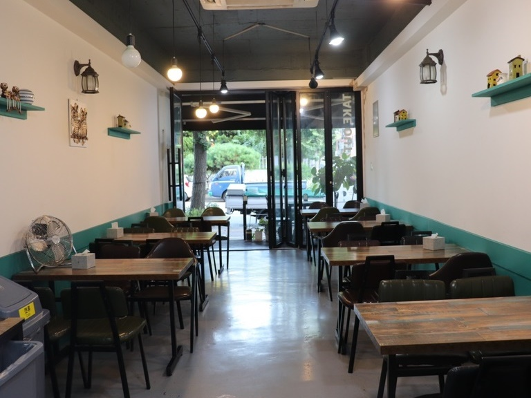
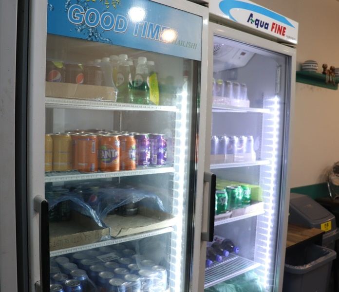
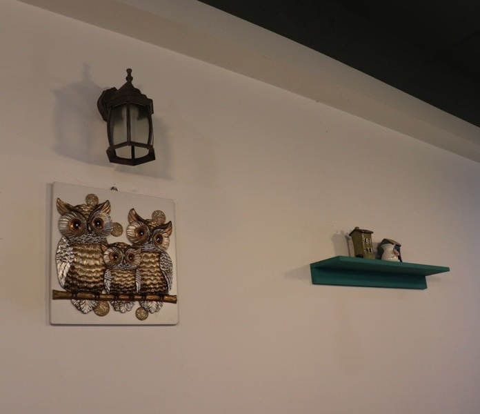
각종 음료수와 버드와이저 맥주로 꽉꽉 채워져 있어요 !
부엉이 그림이나 인형은 집에 갖고 있으면
복이 있는다는데 앤틱한 소품으로도 예쁘더라구요 !
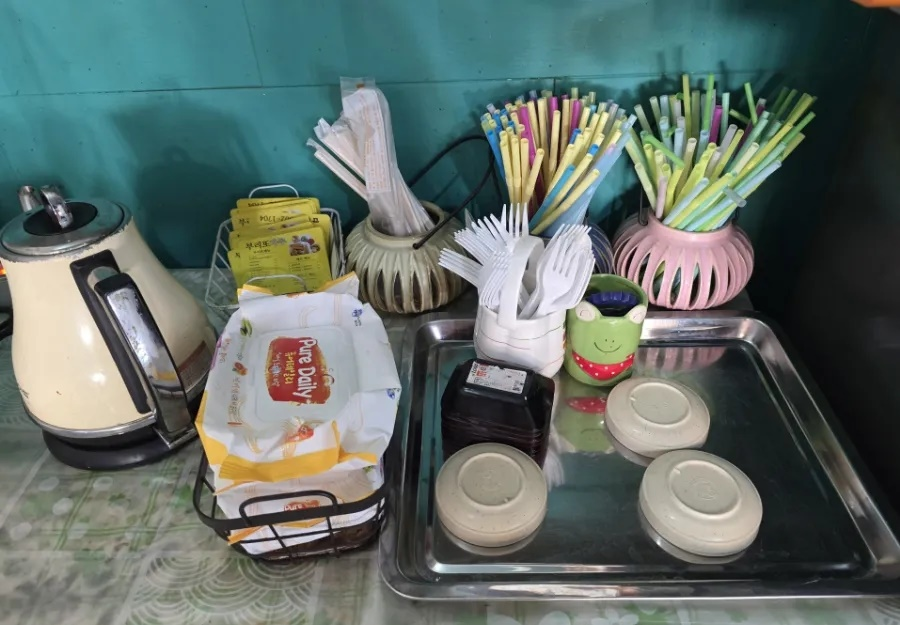
안산대학교 인근이지만 주차 자리는 따로 없어서 도로에 잠시 주차하면 되고 예약도 가능해요 !
15,000원 이상 배달의 민족으로 배달도 가능해요 !
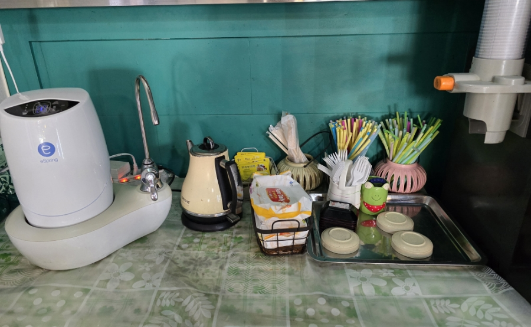
필요한 식기류는 셀프입니다.
정수기는 없지만 정수기 역할을 해주고 물을 먹을 수 있어요.
포트 옆에 보면 있어요 !
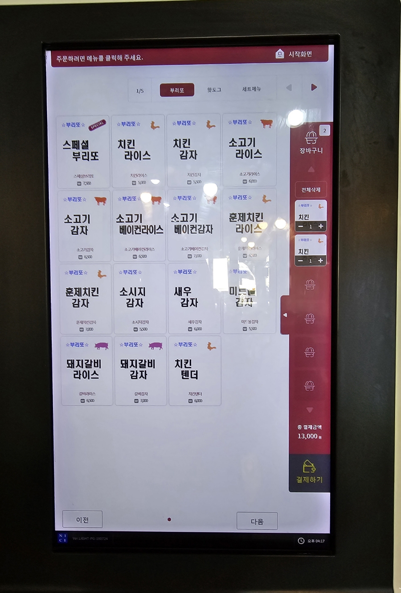
주문은 키오스크로 가능하고 메뉴도 다양하게 있어 고를 수 있어요
뭐 먹을지 고민하는데 항상 먹던 것만 먹게 되네요 ㅎㅎ
저희는 치킨라이스와 소고기 베이컨 감자 두개를 주문 했어요 !
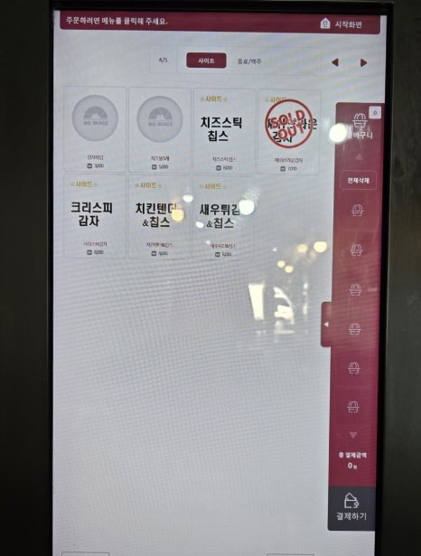
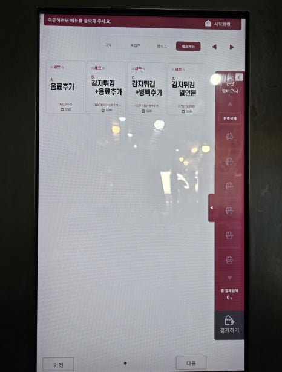
사이드 메뉴도 있고 세트메뉴도 있어요 또 점보 사이즈로 변경도 가능해요 !
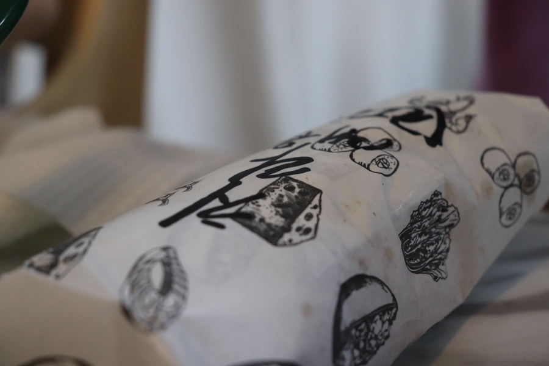
치킨 라이스 부리또 ~~
앞글자만 줄여서 보기 쉽게 써주신
센스쟁이 사장님 👍
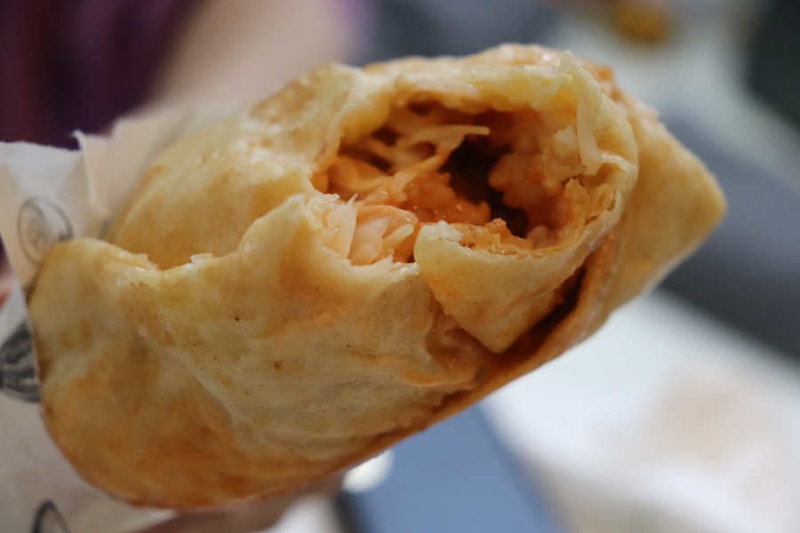
주현이는 맛 고를때 매운 맛 골랐는데 꽤 ~~ 매웠다고 하더라구요.
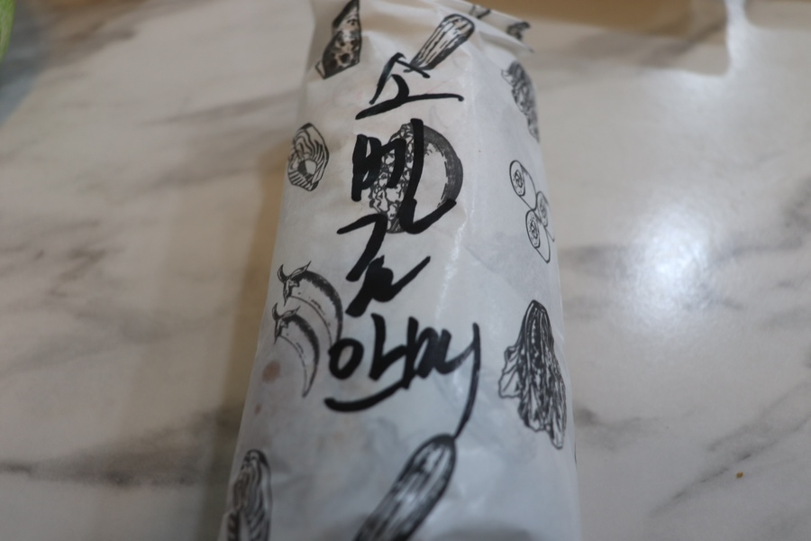
이건 저의 소고기 베이컨 감자 !
여기에도 마찬가지로 메뉴명이 적혀있어서
여러명이 먹을 때 아주 좋을 것 같았어요 !
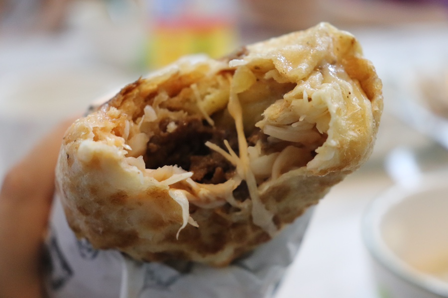
크 단면에 보이는 소고기 👍
저는 안매운 맛 골랐는데
먹고도 매운 맛 전혀 없고
야채도 아삭 싱싱해서 맛있더라구요!
마루부리또
주소 : 경기 안산시 상록구 안산대학로 164
전화번호 : 010-5606-1704
음식 종류 : 양식
가격대 : \4,000 ~ \9,000